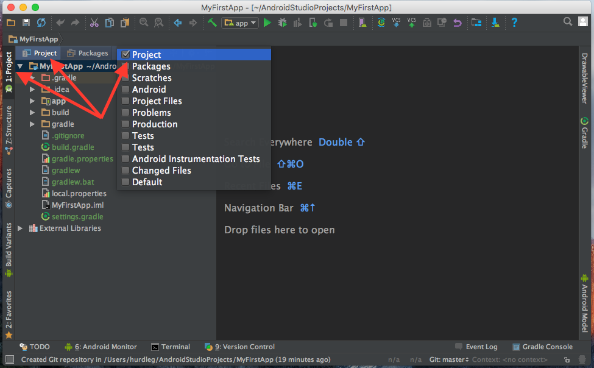

You will Learn
- to create a local git repository of your Android Studio project
Step 1: Enable Version Control Integration
VCS > Enable Version Control Integration > select "Git"
Notes:
- this operation is equivalent to running git init from the command-line
- notice in your project list, red file names (boo!); our files are not staged yet
Step 2: Add to VCS
Change your Project window (View > Tool Windows > Project) to Project view:

VCS > Git > + Add
Notes:
- this operation is equivalent to running git add on the command-line
- notice... green file names... the files have been added, and ready for commit
Step 3: Commit Changes
VCS > Git > Commit Directory
Write your Commit Message, then choose Commit.
If you select Commit and Push..., then git will also push to your remote (typically hosted on GitHub.com)
Notes:
- this operation is equivalent to running git commit -m "message" on the command-line
Screencast
https://www.youtube.com/watch?v=0tabfBuWAMY&feature=youtu.be